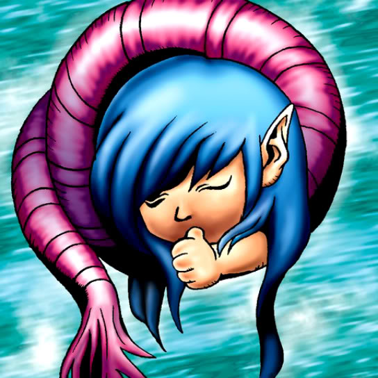

Nemuriko

Description: "While this card is face-up in the defense position, spellbinds all enemy WARRIOR monsters."
STATS
ATK: 800
DEF: 700DECK COST
Deck Cost per Card: 20EFFECT NOT IMPLEMENTED
Fusion List (32 Possible Fusions)
- Nemuriko + Air Marmot of Nefariousness = Nekogal #2
- Nemuriko + Ancient Jar = Mystical Sand
- Nemuriko + Bean Soldier = Queen of Autumn Leaves
- Nemuriko + Blue-Eyed Silver Zombie = Magical Ghost
- Nemuriko + Corroding Shark = Magical Ghost
- Nemuriko + Dancing Elf = Dark Elf
- Nemuriko + Dark Plant = Queen of Autumn Leaves
- Nemuriko + Darkworld Thorns = Queen of Autumn Leaves
- Nemuriko + Dissolverock = Mystical Sand
- Nemuriko + Dragon Statue = Blackland Fire Dragon
- Nemuriko + Fire Reaper = Magical Ghost
- Nemuriko + Firegrass = Queen of Autumn Leaves
- Nemuriko + Flower Wolf = Nekogal #2
- Nemuriko + Griffore = Nekogal #2
- Nemuriko + Haniwa = Mystical Sand
- Nemuriko + Happy Lover = Dark Witch
- Nemuriko + Key Mace = Dark Witch
- Nemuriko + Muka Muka = Mystical Sand
- Nemuriko + Muse-A = Dark Witch
- Nemuriko + Mushroom Man = Queen of Autumn Leaves
- Nemuriko + Mystic Lamp = Lord of the Lamp
- Nemuriko + Oscillo Hero #2 = The Immortal of Thunder
- Nemuriko + Petit Dragon = Blackland Fire Dragon
- Nemuriko + Pot the Trick = Mystical Sand
- Nemuriko + Ryu-Kishin = Ryu-Kishin Powered
- Nemuriko + Skull Servant = Magical Ghost
- Nemuriko + The Wandering Doomed = Magical Ghost
- Nemuriko + Torike = Nekogal #2
- Nemuriko + Tripwire Beast = The Immortal of Thunder
- Nemuriko + Turtle Raccoon = 30,000-Year White Turtle
- Nemuriko + Yashinoki = Queen of Autumn Leaves
- Nemuriko + Zombie Warrior = Magical Ghost